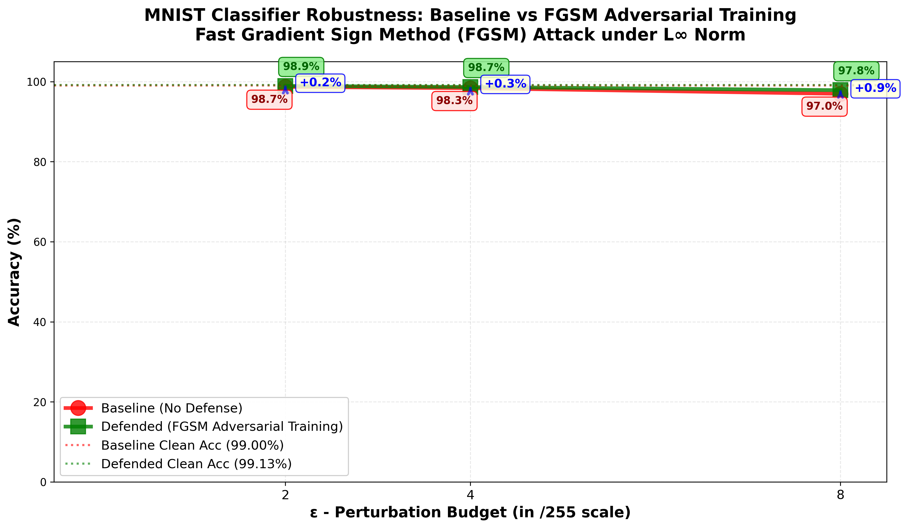

FGSM-Based Analysis of Model Robustness
This project presents an implementation of FGSM adversarial attacks and adversarial training on a CNN trained for MNIST digit classification. The study evaluates model performance under different perturbation levels and analyzes robustness improvements.
